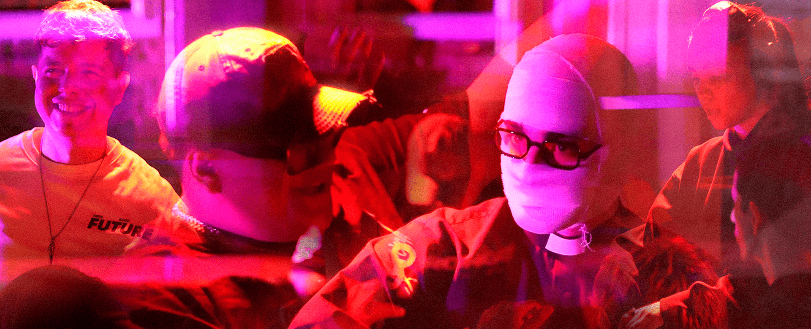
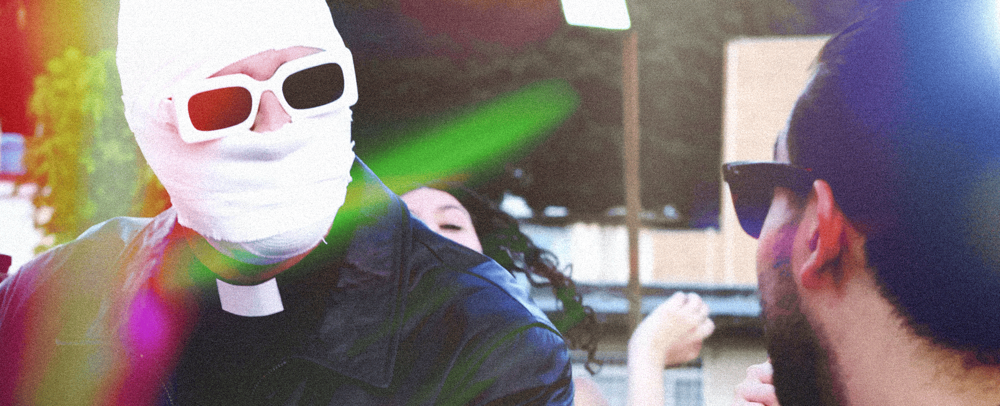

Birongo Live
Así comienza Birongo Live. La experiencia integral de música electrónica en Caracas.
Todo gran proyecto tiene un punto de partida, y para Birongo, ese momento tiene nombres propios: SirDiamnd y Heresicka. El 13 de diciembre de 2025, La Quinta Bar fue el escenario de nuestra prueba de fuego. Una noche donde más de 200 personas se unieron en una experiencia sonora única.

Diario: Heresicka
Heresicka: Mi experiencia grabando mi videoset con Techno Veneko
Una experiencia brutal de Hardtechno con Techno Veneko que, más allá de la música, me enseñó el valor de la comunidad, la colaboración sin egos y el sentimiento de encontrar un nuevo hogar en la escena junto a grandes amigos y colegas.